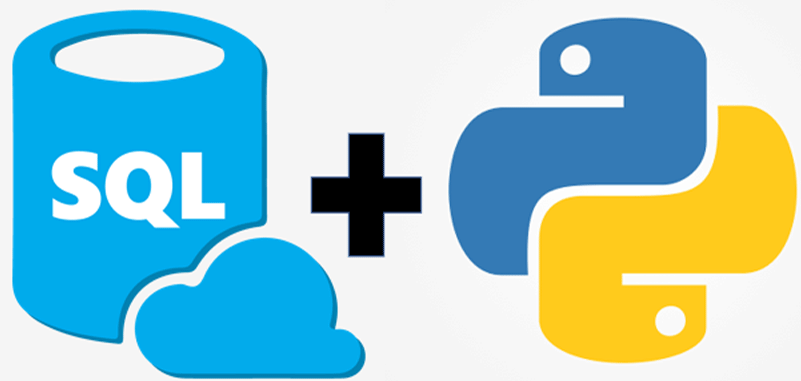
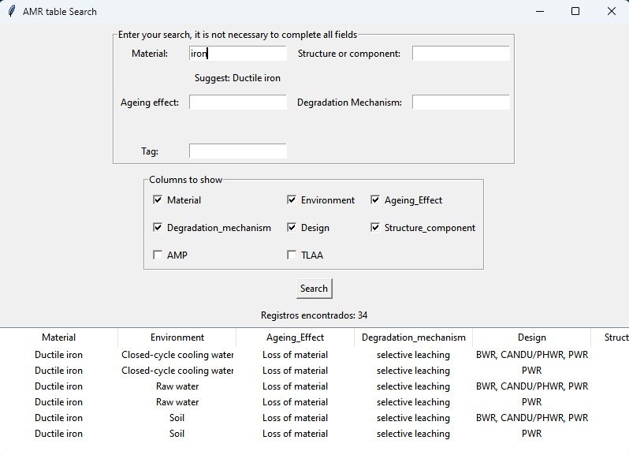

EPRI Data Extraction and Reference Matching Pipeline
Developed a Python-based data extraction and processing pipeline to collect and analyze references to EPRI across IGALL technical documents. Implemented web scraping techniques to extract structured and unstructured data from EPRI and IGALL platforms, including parsing JSON responses to dynamically generate document access links. Built automated workflows to clean, standardize, and match extracted references against existing datasets, ensuring consistency and minimizing false matches. Generated structured Excel outputs for analysis and reporting, enabling efficient validation and traceability of references across documents. Key skills: web scraping, JSON parsing, ETL pipelines, data cleaning, data matching, Python, automation.
Descargar
Relational Database Design and ETL for IGALL Data
This project consisted of building a relational database in SQL Server from multiple existing tables. Tables were designed with appropriate data types and constraints to ensure data integrity. Stored procedures were developed for ETL processes, including data extraction, transformation, and loading. Data validation ensured no duplication and correct formatting, while relationships were established using foreign keys.
Descargar
ETL Pipeline for Excel to SQL Data Migration
This project involved migrating a database from Excel files to a relational SQL database. It included extensive data cleaning to remove duplicates and inconsistencies. The database structure was optimized, and a Python-based search prototype was developed to efficiently query and access the data.
Descargar